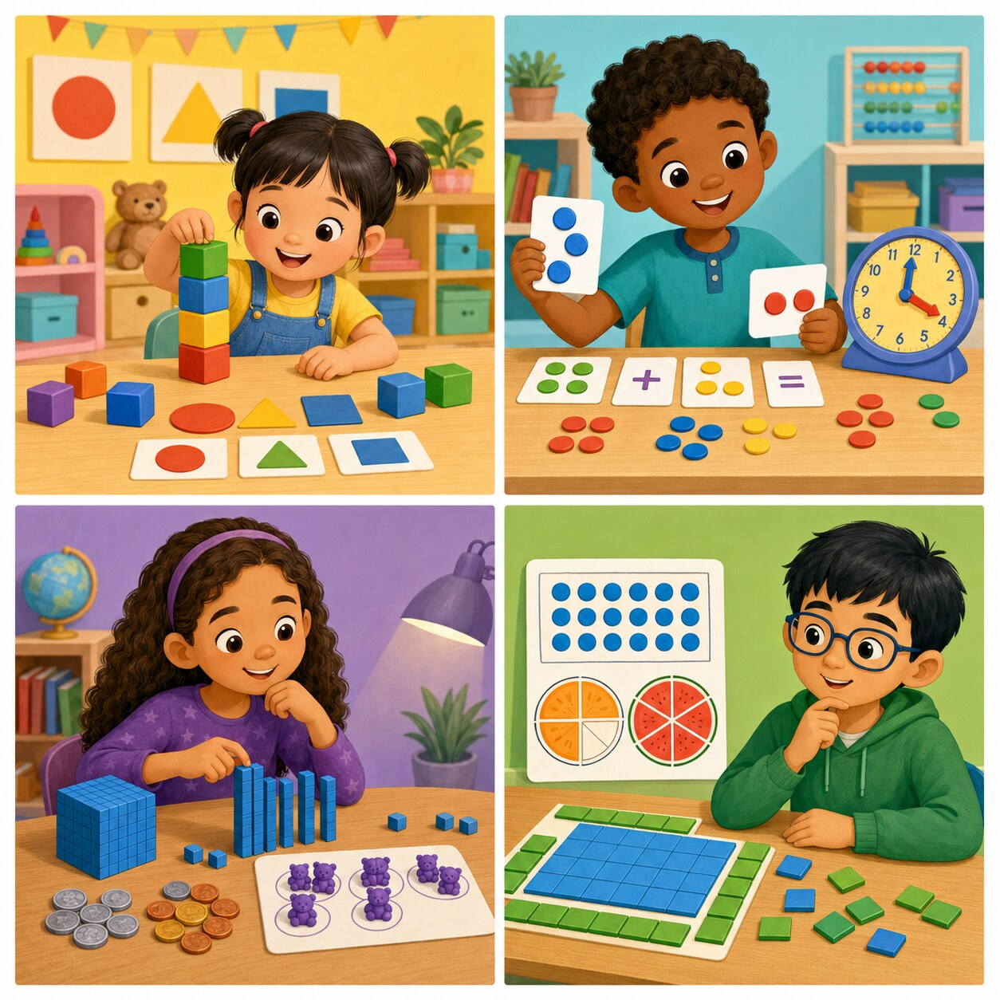

FOR KIDS & GRANDKIDS
Math Adventures
for Grades K–3
Press Listen, hear a playful story problem, count the colorful pictures and choose your answer. A friendly voice celebrates success and gives gentle hints when a child needs another try.

LISTEN · LOOK · CHOOSE
Which grade would you like?
Every grade has four narrated picture stories. Children learn at different speeds, so moving up or down a grade is always okay.
FOR GROWN-UPS
Listen together, then let the child point and count.
Ten relaxed minutes can be more useful than a long, frustrating session. Replay any story, let children touch the pictures while counting and celebrate the effort behind every answer. The voice comes from the child's browser or device, and every question remains visible for reading. These activities are educational practice and are not a replacement for a child's school curriculum.